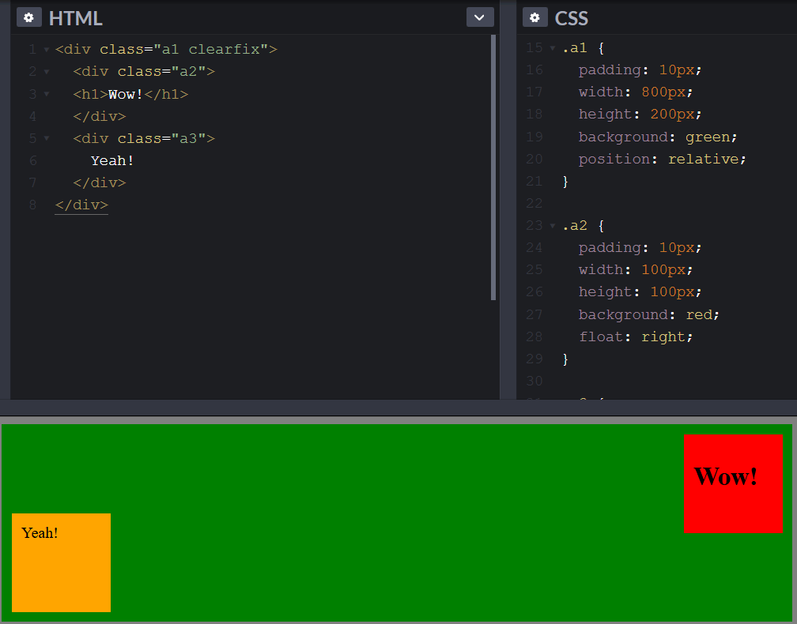

Селектором css может быть тег html. Свойства будут применены ко всем одноименным тегам на странице. Также, селектором может быть название определенного класса. Свойства селектора * будут применены ко всем тегам на странице.
Свойства css записываются в фигурных скобках после определенного селектора. Ниже для удобства свойства разбиты на несколько категорий.
Все свойства CSS
Список 300+ CSS-свойств,
Таблица css-свойств.
Фон – background
- background-color: white; Задает цвет фона.
- background: white url("image.jpg") no-repeat 50% 0; Общее свойство, описывающее фон страницы.
Размеры, ширина, высота – width, height
- width: 100px;
- min-width: 100px;
- max-width: 100px;
- height: 100px;
- min-height: 100px;
- max-height: 100px;
В чем задаются значения? В абсолютных и относительных единицах.
Цвет – color
Рамка – border
- border: 2px dashed blue;
- border-radius: 5px;
Шрифт – font
- font-family: arial sans-serif;
Гротеск: sans – без + serif – засечек. Антиква, serif – с засечками:

- font-size: 16pt;
CSS Web Safe Font Combinations,
Мобильная типографика
Текст – text
- text-align: justify; (left, right, center)
- text-decoration: underline;
- line-height: 20pt;
Поля – margin и padding
- margin: 0 auto; (внешнее поле, маргиналии)
- padding: 20px; (внутреннее поле)
Положение и видимость
- display: block; (inline, inline-block, none)
- position: relative; (absolute)
- float: right; (left)
- object-fit: cover; (contain, scale-down. Для тегов img и video)
- object-position: 50% 50%;
- overflow-y: scroll;
Горизонтальное и вертикальное выравнивание
Центрирование в css
выравнивание в css
Basic concepts of flexbox
Остальное
- list-style: none; (применяется для скрытия буллетов у ненумерованных списков)
Применение свойств классов к простому html-коду:

Полезные ссылки: css-tricks,
CSS Default Values Reference,
горизонтальное меню.